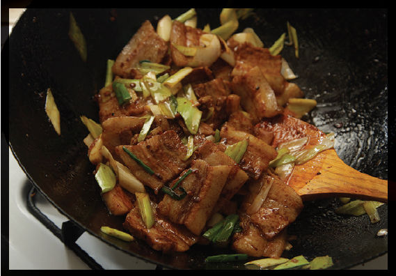

SICHUAN DOUBLE-COOKED PORK BELLY
|
Yield Serves 4 |
Active Time 20 minutes Total Time 1 hour |
You can skip the traditional simmering and slicing process (steps 1 and 2) and use thinly sliced fresh pork belly instead. If using store-bought sliced pork belly, omit all of the aromatics from step 1. It’s nearly impossible to overcook pork belly, so there is no need to batch stir-fry the pork in this recipe—you can do it all in one go.
INGREDIENTS
For the Pork:
2 tablespoons (20 g) kosher salt
1 star anise pod
2 whole cloves
2 to 3 slices unpeeled fresh ginger
3 medium garlic cloves (8 g), peeled and lightly smashed with the side of a knife
¼ cup (60 ml) Shaoxing wine or dry sherry
2 quarts (2 l) water
1 pound (450 g) slab fresh pork belly, rind removed
For the Sauce:
2 teaspoons (10 ml) tianmianjiang (Chinese sweet bean paste)
1 tablespoon (about 6 g) dried fermented black beans (douchi), roughly chopped
1 teaspoon (5 ml) dark soy sauce
For the Stir-Fry:
3 tablespoons (45 ml) peanut, rice bran, or other neutral oil
3 scallions, cut into 2-inch segments
1 medium leek, white part only, quartered lengthwise and cut into 2-inch segments (about 1½ cups)
1 tablespoon (15 ml) doubanjiang (Chinese chile bean paste)
DIRECTIONS
1For the Pork: Combine the salt, star anise, cloves, ginger, garlic, wine, and water in a medium saucepan and stir until the salt is dissolved. Add the pork and bring to a simmer over high heat. Adjust the heat to maintain a gentle simmer until the pork is just cooked through, about 15 minutes. Reserve ¼ cup (60 ml) of the cooking liquid and discard the rest.
2Transfer the pork to a plate and refrigerate until firm, about 30 minutes. Cut the pork into slices between ¼ and ⅛ inch thick and about 2 inches square.
3Meanwhile, Make the Sauce: Combine the reserved cooking liquid, sweet bean paste, fermented black beans, and soy sauce in a small bowl and stir with a fork until homogenous.
4BEFORE YOU STIR-FRY, GET YOUR BOWLS READY:
- a. Leeks and scallions
- b. Sliced pork belly
- c. Fermented chile bean paste (doubanjiang)
- d. Sauce
- e. Empty bowl for cooked ingredients
- f. Serving platter
5For the Stir-Fry: Heat a wok over high heat until lightly smoking. Add 1 tablespoon (15 ml) of the oil and swirl to coat. Add the scallions and leeks and stir-fry until tender-crisp, about 1 minute. Transfer to a plate.
6Wipe out the wok and return it to high heat until lightly smoking. Add 1 tablespoon (15 ml) of the remaining oil and swirl to coat. Add all of the pork belly and cook, stirring and tossing occasionally until the pork is lightly browned and crisp around the edges, about 3 minutes. Transfer the pork to the plate with the leeks and scallions.
7Add the remaining tablespoon of oil and the chile bean paste to the wok, stir-frying until the oil is dark red, about 15 seconds. Return the pork and leeks/scallions to the wok and add the sauce. Stir-fry until the sauce has reduced and coats the pork. Transfer to a serving platter and serve immediately.

